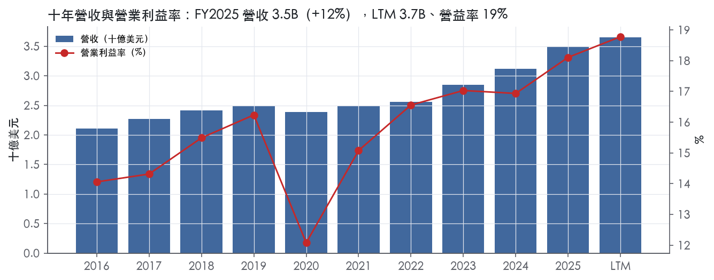
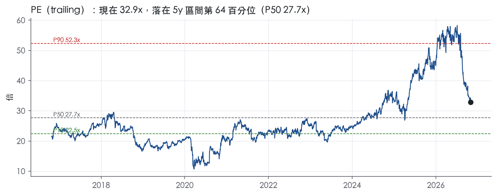
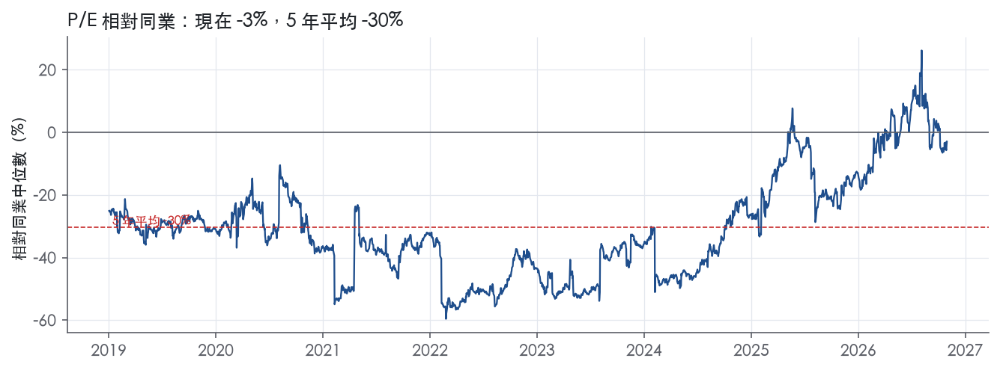
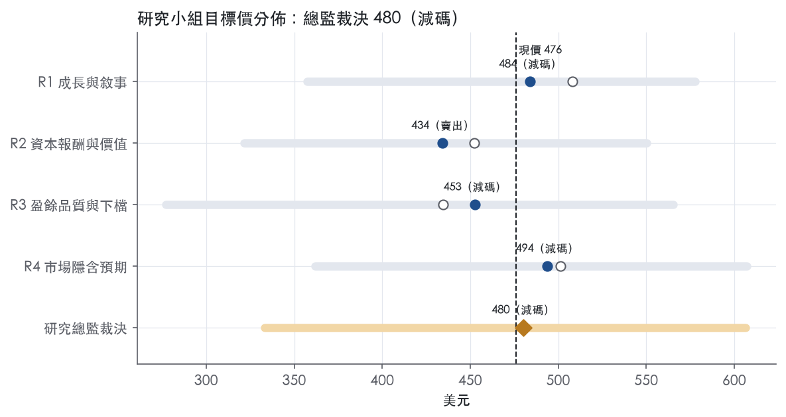
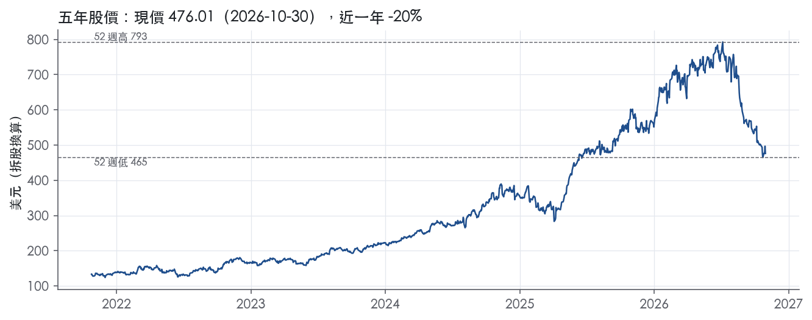

評等總表 › 工業 › CW
成長溢價退場，倍數略低持平，減碼｜評等 減碼｜目標價 480
| 報告日 | 評等 | 目標價 | 當時股價 | 超額報酬 |
|---|---|---|---|---|
| 2026-10-30 | 減碼 | 480 | 476 | -8.9% |
| 評等 | 減碼 |
| 12 個月目標價 | 480 美元 |
| 現價 | 476.01 美元（2026-10-30） |
| 預期報酬 | 股價 +0.9%＋股息 0.2%＝總報酬 +1.1%；同業籃門檻 10.0%，超額 -8.9% |
| 估值方法 | P/E 30.0x，套在第 5–8 季的EPS（也就是一年後的未來四季） |
| 三情境 | 熊 333／基準 498／牛 606 |
| 研究流程 | 四位研究員兩輪辯論＋研究總監裁決 |
| 資料來源 | SEC EDGAR XBRL、Tiingo、FRED（全免費） |
成長溢價退場，倍數略低持平，減碼（研究總監裁決，四位研究員兩輪辯論後）
評等 減碼｜12 個月目標價 480 美元（總監三情境機率加權 492 與研究員中位數 468 各半）｜現價 476.01（2026-10-30）
預期報酬：股價 +0.9%＋股息 0.2%＝總報酬 +1.1%。同業籃門檻 10.0%，超額 -8.9%。
估值方法：P/E 30.0x，套在第 5–8 季的EPS（也就是一年後的未來四季）。三情境：熊 333（23%）／基準 498（48%）／牛 606（29%）。
什麼會讓研究總監改變看法：Q3 DE 營收轉正、FY2027 指引中點 ≥10% 且對同業折價未擴大，倍數回到持平 31.9x 以上、轉中性；FY2027 指引出現潛艦排程延後措辭或 Q3 book-to-bill <1.0x，熊機率上調。
| 過去四季（實際，FY2026Q2） | 未來四季 | 第 5–8 季 | 第 9–12 季 | |
|---|---|---|---|---|
| 營收（B） | 3.7B | 3.9B | 4.3B | 4.5B |
| 營收成長 | 10.5% | 8.0% | 8.0% | 6.0% |
| 營業利益率 | 18.8% | 19.0% | 19.4% | 19.6% |
| EPS（美元） | 14.48 | 14.85 | 16.62 | 18.02 |
| EPS 成長 | 22.4% | 2.6% | 11.9% | 8.5% |
| 每股股息（美元） | 0.98 | 0.98 | 0.98 | 0.98 |
| P/E（現價） | 32.9x | 32.1x | 28.6x | 26.4x |
| 股息殖利率（現價） | 0.2% | 0.2% | 0.2% | 0.2% |
過去四季為申報數字；預測為研究總監的假設、程式計算。倍數與殖利率都用現價計算，用來看現價對應各期獲利的高低。
| 情境 | 機率（歷史） | 故事 | 未來四季營收成長 | 第 5–8 季營益率 | 倍數 | 目標價 | 股價漲跌 |
|---|---|---|---|---|---|---|---|
| 熊 | 23%（21%） | 對應風險表第 1 條（DE 連兩季衰退、國防預算）與第 2 條（Virginia／Columbia 排程延後）：Q3 B2B <1.0x、FY2027 指引中點 <6%，組合效果壓低營益率，本行下行路徑 GDP 0.3% 疊加，倍數回到 10 年 trailing P50 附近 | 4.0% | 18.0% | 24.0x | 333 | -30.0% |
| 基準 | 48%（50%） | 達成 FY2026 指引、2027 約 8% 成長與每年約 40bp 擴利、回購維持三年均速，成長溢價退一部分、對同業折價擴至 -9% 上下 | 8.0% | 19.4% | 30.0x | 498 | 4.7% |
| 牛 | 29%（29%） | DE record 訂單轉營收並於 Q3／Q4 轉正、FY2027 指引中點 ≥10%、商用核電新建進入量產訂單，本行上行路徑 GDP 2.8%，倍數升至持平 31.9x 之上、3 年 trailing P50 35.1x 之下 | 10.0% | 20.0% | 34.0x | 606 | 27.4% |
目標價由程式依研究總監的驅動與倍數計算；機率由研究總監給定。括號內是歷史頻率：把這檔股票過去十年 12 個月報酬的波動形狀，置中在基準情境，結果落在各情境附近的比例。
四位研究員用不同方法各自估值，回應研究總監的質疑後交出第二輪，最後由總監逐點裁決。各研究員的主張見第七章，裁決理由見第八章，完整論證見《研究底稿》。
| 立場（一輪→二輪） | 加權目標價（一輪→二輪） | 評等（一輪→二輪） | 第二輪倍數 | 熊～牛目標價 | |
|---|---|---|---|---|---|
| R1 成長與敘事 | 中性→中性 | 508→484 | 中立→減碼 | 33.0x | 357～578 |
| R2 資本報酬與價值 | 看空→看空 | 452→434 | 減碼→賣出 | 29.0x | 321～550 |
| R3 盈餘品質與下檔 | 看空→看空 | 435→453 | 賣出→減碼 | 28.0x | 277～565 |
| R4 市場隱含預期 | 中性→中性 | 501→494 | 中立→減碼 | 30.0x | 362～607 |
| 研究總監裁決 | 看空 | 480 | 減碼 | 30.0x | 333～606 |
目標價由程式依各自的驅動與倍數計算；評等＝機率加權總報酬 − 同業籃門檻。
Curtiss-Wright 是一家以航太與國防（A&D）為主、兼跨商用核電與工業流程市場的高度工程化產品與服務供應商。「Curtiss-Wright Corporation is a global integrated business that provides highly engineered products, solutions, and services mainly to Aerospace & Defense ("A&D") markets, as well as critical technologies in demanding commercial nuclear power, process, and industrial markets.」¹公司強調自身在高性能平台與關鍵應用上有不可替代的技術位置，產品常用於「must-not-fail safety-critical applications」¹。客戶主要是國防主承包商、商用航太 OEM，以及眾多能源與製造業公司¹。這是一家靠併購與技術堆疊起來的利基型工業股，而非單一大客戶綁定的代工廠。
公司依產品與市場分成三個可報導分部：Aerospace & Industrial、Defense Electronics、Naval & Power¹。
Aerospace & Industrial 銷售主要來自商用航太與一般工業市場，部分來自國防市場，產品包括感測器、控制與電機致動元件、表面技術服務（shot peening、laser peening、engineered coatings），以及工業與特殊車輛產品（功率管理電子、牽引逆變器、變速箱換檔器）¹。FY2025 全年營收 3.50B，FY2026Q2 該分部營收 268M，年增 12%²；FY2026Q1 營收 255M，年增 12%³。
Defense Electronics 主要賣給國防市場（航太防務、地面防務、海軍防務），產品涵蓋 COTS 嵌入式計算板卡、資料採集與飛行測試設備、整合子系統、戰術通訊與電子穩定產品¹，公司稱其在「more than 400 defense platforms and more than 3,000 programs worldwide」有平台級滲透¹。該分部是公司毛利率最高的分部，FY2026Q2 營收 246M、年減 3%，但營益率達 28.0%²；FY2026Q1 營收 256M、年增 5%，營益率 28.1%³。
Naval & Power 主要賣給海軍防務與電力流程市場，產品包括主冷卻劑泵、電機、發電機、蒸汽輪機、閥件等，主要供應美國海軍 Virginia 級、Columbia 級潛艦與 Ford 級航艦計畫¹；另在核電市場提供既有反應爐維護零件，以及為 AP1000 等新建反應爐提供反應爐冷卻泵（RCP）與控制棒驅動機構，同時積極布局小型模組化反應爐（SMR）¹。FY2026Q2 該分部營收 410M、年增 7%，營益率 17.3%²；FY2026Q1 營收 402M、年增 21%，營益率 14.9%³，為三個分部中成長最快者。
三分部對應不同終端市場週期：商用航太隨 OEM 產量波動、國防隨政府預算波動、工業端隨一般景氣波動¹，10-K 未揭露各分部占集團總營收的精確比重，但由季報數字可推算 Naval & Power 規模最大、Aerospace & Industrial 次之、Defense Electronics 最小但利潤率最高。
公司客群分散，沒有客戶集中風險：「No customer accounted for more than 10% of our total net sales during 2025, 2024, or 2023.」¹但政府業務占比高，2025 年來自美國政府機構與承包商的銷售約占總營收 47%¹，若含對美國及外國政府的終端銷售則達 58%¹。2025 年美國政府銷售總額分部別：Defense Electronics 貢獻 761,926 千美元、Naval & Power 貢獻 704,051 千美元、Aerospace & Industrial 貢獻 181,042 千美元，三者合計 1,647,019 千美元¹。海外業務比重持續上升，2025、2024、2023 年海外業務占稅前利潤分別為 41%、38%、35%¹。通路上，商用業務走一般商業銷售與行銷管道，國防業務走受管制的政府合約管道¹。固定價格合約下公司通常須自行吸收成本超支，這是國防供應商的常見風險結構。
FY2025Q3（2025-09-30）營收 0.87B，年增 8.8%，營益率 19.1%（is.revenue 等對應資料包季表）。
FY2025Q4（2025-12-31，依年度推導）營收 0.95B，年增 14.9%，營益率 19.2%，為全年營收與利潤率高點。
FY2026Q1（2026-03-31）新聞稿報導營收 914M，年增 13%，營業利益 160M、年增 23%，營益率 17.5%；調整後 EPS 3.48 美元、年增 23%；新訂單約 1.2B，年增 16%，book-to-bill 1.3x；當季自由現金流為負 17M³。公司同時上修全年指引：「Sales guidance increased to new range of 7% to 8% growth...Diluted EPS guidance increased to new range of $14.90 to $15.30」³。
FY2026Q2（2026-06-30）新聞稿報導營收 924M，年增 5%，營業利益 179M，營益率 19.3%，GAAP 稀釋 EPS 4.07 美元；調整後營益率 19.4%、年增 110 基點；新訂單 1.1B，年增 8%，book-to-bill 1.16x；自由現金流 160M，FCF 轉換率 116%²。公司再度上修全年指引：「Sales increased to new range of 8% to 9% growth (previously 7% to 8%)...Diluted EPS increased to new range of $15.10 to $15.40, now up 14% to 16%」²。CEO Lynn Bamford 稱「The momentum continues to build in our order book, underscored by record demand for our defense electronics products」²。期末 backlog 達 4.5B，較 2025 年底增加 10%²。兩季財報呈現的是加速成長＋營益率擴張＋持續上調全年指引的模式，訂單增速高於營收增速，意味後續季度營收能見度不差。
公司將現行策略稱為「Pivot to Growth」，核心是「maximizing revenue, operating income, and free cash flow growth to drive continued value creation for its shareholders」¹，手段是「a renewed drive for top-line acceleration through both organic and inorganic sales growth」，同時透過「One Curtiss-Wright vision through Commercial Excellence」深化客戶關係¹。配套的「Operational Growth Platform」目標是持續擴大營益率並釋出資金支撐研發投入¹，資本配置優先順序是併購，其次是股票回購與股利¹。在具體市場上，公司點名小型模組化反應爐（SMR）與次世代先進反應爐為新成長項目，稱相關專案「continue to transition from development into the initial prototype stage」²；國防電子訂單被形容為「record demand」²。CEO 在 2026Q1 也強調「Curtiss-Wright remains strategically aligned with many favorable secular growth trends across our markets」³。
公司成長引擎本質是防務電子高毛利＋海軍造艦長週期訂單＋商用核電新建這三條腿共同撐出的 ROIC 擴張故事，SMR 與先進反應爐目前仍是原型階段，貢獻營收尚待驗證。目前 trailing 倍數（EV/EBITDA 22.4x、P/E 32.9x）已落在過去五年 60–70% 分位，股價對「連續上調全年指引」這個敘事已有相當程度計入。後續觀察重點是 Defense Electronics 營收能否止跌回升，以及 backlog 轉營收的速度是否跟上訂單增速。

CW 評為窄護城河，趨勢變寬：我們有把握未來 5 年以上 ROIC 高於資本成本，但還不足以把握 10 年以上。優勢集中在海軍核動力與國防電子的平台嵌入，旗下商用工業業務拉低了整體護城河的厚度。
轉換成本（主要來源）：CW 的產品寫進武器平台與核設施的設計基準，客戶要換供應商就得重新驗證，成本與時程風險都高。公司稱「Our products are often in must-not-fail safety-critical applications.」¹它也說自己與客戶的關係是「long-standing customer relationships where we are deeply embedded in our customers' workflows」¹。國防電子有「a presence on more than 400 defense platforms and more than 3,000 programs worldwide」¹。公司另提到「total lifecycle management services and technology refreshes in defense electronics」¹。平台服役期長，生命週期服務與技術更新讓收入跟著平台走，而不是一次性出貨。
效率規模（次要來源）：海軍推進與核電零組件市場小、資格門檻高，容不下多家供應商，後進者進場的報酬不划算。公司供應主冷卻泵、蒸汽輪機與閥件，「most notably supporting the Virginia-class and Columbia-class submarine programs, as well as the Ford-class aircraft carrier program」¹。新建核電方面，它提供 RCP 與控制棒驅動機構，「most notably to support the Generation III+ Westinghouse AP1000 reactor design」¹。公司自述商業模式是「mission critical, niche products and services」¹。
成本優勢、網路效應與無形資產都沒有足夠證據，因此不列入。公司自己承認「We compete globally, primarily based on technology and pricing.」¹這句話也說明它沒有可以免於價格競爭的成本護城河。
數字支持「有護城河」，但超額報酬不夠厚，不足以支持寬評級。
最大的結構性威脅是開放架構，它會削弱國防電子的轉換成本。公司稱「As a supplier of Modular Open Systems Approach ("MOSA") based solutions, we are aligned with the best-in-class open standards-based architectures」¹。開放標準短期帶來主承包商外包，長期卻會讓板卡層級更容易被替換。
政府合約條款讓議價權偏向客戶。原文寫明「contracts and orders are subject to partial or complete termination at any time at the option of the customer」¹，並且「Fixed-price contracts usually provide that we absorb the majority of any cost overrun.」¹政府終端銷售占比 2025 年為 58%¹，這代表預算與採購政策是單一最大變數。
資本配置把併購列為優先¹。高價併購若墊高投入資本，會稀釋 ROIC 的超額報酬。此外，商用航太「primarily impacted by OEM production rates」，部分工業業務則「impacted primarily by general economic conditions」¹，這些都是護城河較淺的業務。
目標倍數可以相對同業給溢價，理由是利潤率穩定度與 ROIC 上升趨勢都有數字驗證，但溢價幅度要有限，持續期設在 5 年左右，不宜套用寬護城河的永續超額報酬假設。目前 EV/EBITDA 22.5x 已高於自身 5 年中位 17.6x。只要 ROIC 擴張出現停滯，或 MOSA 開始反映在國防電子的利潤率上，就應該把溢價收回到持平。
| 指標 | 最新 | 十年平均 | 標準差 | 最低 | 最高 |
|---|---|---|---|---|---|
| ROIC | 15.9% | 12.9% | 2.1% | 9.2% | 15.9% |
| 毛利率 | 37.2% | 36.4% | 0.9% | 34.8% | 37.5% |
| 營業利益率 | 18.1% | 15.6% | 1.7% | 12.1% | 18.1% |
| FCF 利潤率 | 15.8% | 13.7% | 2.6% | 8.9% | 17.8% |
| ROE | 19.4% | 16.2% | 2.3% | 11.3% | 19.4% |
程式計算。資本成本代理值（10 年債＋5%）：10.0%；ROIC 平均減資本成本：2.9%；ROIC 有資料的 9 年中，高於資本成本 8 年。
Curtiss-Wright 的盈餘品質計分表除稀釋股數年變動外全部為綠燈：LTM 營業現金流／淨利 1.33x、FCF／淨利 1.16x、應計比率 -3.4%、淨負債／EBITDA 0.60x、利息保障 16.2x。這組合代表報表淨利有實際現金支撐，不是靠應計項目堆出來的數字。
LTM 現金轉換是真的，不是單季運氣。營業現金流／淨利 LTM 1.33x、近三年平均 1.31x、十年平均 1.44x，三個時間窗都站在 1.00x 綠燈門檻之上。FCF／淨利同樣全數 ≥0.90x（LTM 1.16x、三年 1.16x、十年 1.25x），代表資本支出沒有把現金吃光。應計比率連三期都是負值（LTM -3.4%、三年 -2.7%、十年 -2.6%），正負號對了方向——盈餘靠現金而不是靠應計膨脹。唯一要注意的是季度節奏：FY2025Q1 與 FY2026Q1 的營業現金流分別是 -0.04B 與 -0.01B，Q1 連續兩年現金流為負，但這是政府合約與營運資金在年初的季節性佔用，Q2、Q3、Q4 都轉正且全年轉換率仍達標，判定為季節性而非結構性問題。FY2025 存貨成長減營收成長僅 +1.5pp，遠低於 15pp 紅線，營運資金沒有在偷吃盈餘。
Q2-2026 新聞稿的非 GAAP 調整項目不大，而且方向特別值得一提：Adjusted diluted EPS $3.72 反而低於 GAAP 稀釋 EPS $4.07²。原因是公司把「本年度一項權益證券投資利益（a current-year gain on equity securities held for investment purposes）」從調整後數字中剔除，連同首年收購產生的攤銷／收購會計成本（first-year purchase accounting costs associated with prior-year acquisitions）以及 FY24、FY26 重組計畫成本一起排除²。Q2-2025 的對比可見差距規模：報告營業利益 $156M、調整後 $160M，差額約 $4M，屬於重組與收購會計的正常規模²。重組費用在利潤表上也單獨列示（Q2-2026 restructuring expenses $517 千，六個月 $1,427 千），金額小且逐年遞減²。我認為這些調整項目性質合理——收購首年攤銷與重組是真實但非經常性的成本，投資性權益證券利得屬於與主業無關的市值波動，排除在調整後盈餘之外是正確做法。SBC／營收僅 0.6%–0.7%，本系統未加回，但金額本身不足以扭曲盈餘品質。
槓桿極低且持續去化：淨負債／EBITDA LTM 0.60x，遠低於三年平均 0.96x 與十年平均 1.23x，去槓桿趨勢清楚。利息保障倍數 LTM 16.2x，遠優於十年平均 10.1x，付息能力毫無壓力。資本配置上，公司股利已連續十年增加，2026 年 5 月把季配息從 $0.24 上調 8% 至 $0.26，為連續第十年增配²。但同期股票回購規模偏小，Q2-2026 僅回購 20,105 股、花費約 $15M²，與公司「以收購為優先、股東回饋為輔」的資本配置策略一致¹。（股利＋回購）／淨利 LTM 84.8%、三年平均 65.1%，低於 100% 的風險門檻，代表公司沒有靠舉債回饋股東（量化底稁）。訂單與積壓訂單健康：backlog 於 2025 年底約 $4.1B⁴，到 Q2-2026 已成長至 $4.5B，年增 10%²，顯示盈餘品質背後有實際需求支撐，不是靠降價出貨墊高營收。
估值可以直接用 GAAP／LTM 數字作為基準，不需要額外打折，因為現金轉換、應計比率、槓桿、利息保障四項核心指標全數綠燈且方向一致。非 GAAP 調整項目（重組、收購攤銷、投資性權益利得）金額小且性質合理，估值師可採用 Adjusted EPS 做同業比較，但不必假設 GAAP 數字被誇大。極低槓桿（0.60x 淨負債／EBITDA）不構成倍數上限，反而支持對 CW 給予同業區間偏高端的 EV/EBITDA 倍數，目前 22.4x 相對十年中位數 14.5x 已反映市場對其盈餘品質與成長性的認可，估值師應聚焦成長假設而非盈餘品質折價。
| 項目 | LTM | 近三年 | 十年 | 燈號 | 規則 |
|---|---|---|---|---|---|
| 營業現金流／淨利 | 1.33x | 1.31x | 1.44x | 綠 | ≥1.00x 綠、<0.80x 紅 |
| 自由現金流／淨利 | 1.16x | 1.16x | 1.25x | 綠 | ≥0.90x 綠、<0.60x 紅 |
| 應計比率（(淨利−CFO)／平均總資產） | -3.4% | -2.7% | -2.6% | 綠 | ≤0.0% 綠、>5.0% 紅 |
| SBC／營收 | 0.7% | 0.6% | 0.6% | 綠 | ≤3.0% 綠、>8.0% 紅 |
| 淨負債／EBITDA | 0.60x | 0.96x | 1.23x | 綠 | ≤1.50x 綠、>3.00x 紅 |
| 利息保障倍數（營業利益／利息） | 16.2x | 12.0x | 10.1x | 綠 | ≥8.00x 綠、<3.00x 紅 |
| 稀釋股數年變動 | 0.2% | -0.9% | -2.0% | 黃 | ≤0.0% 綠、>3.0% 紅 |
| （股利＋回購）／淨利 | 84.8% | 65.1% | 69.1% | 綠 | ≥50.0% 綠、<0.0% 紅 |
| 存貨成長 − 營收成長（FY2025） | +1.5pp | — | — | 綠 | ≤5pp 綠、>15pp 紅 |
程式計算；燈號以 LTM（無則近三年平均）判定。
| 風險 | 觸發指標（看什麼數字、在哪裡看） | 對 EPS 的影響方向與粗略幅度 | 未來 12 個月發生機率（高／中／低） | 出處 |
|---|---|---|---|---|
| 美國政府/國防預算波動與合約可被無條件終止 | 美國政府終端銷售占比（2025 年 58%）¹；季報中 Defense Electronics 營收年增率（Q2-2026 為 -3%）²；DoW 年度預算案通過狀況 | 方向：負向，幅度：大（若 Defense Electronics 持續負增長會拖累全公司營益率，該分部營益率 28.0%為全集團最高） | 中 | 10-K 年報 FY2025 Item 1A（風險因素） |
| Naval & Power 對 Virginia-class／Columbia-class／Ford-class 單一造船計畫時程的依賴 | Naval & Power 單季營收年增率與財報中對「timing of revenues on the Virginia-class submarine program」的措辭²；backlog 金額（2025 年底 4.1B；2026Q2 末 4.5B）⁴² | 方向：負向，幅度：大（公司明言「timing」驅動本季成長，代表波動性） | 中 | 10-K 年報 FY2025 Item 1A（風險因素） |
| 商用核電/SMR 新建項目仍在原型階段，收入貢獻尚未落地 | Power & process 市場營收明細、公司用語「continue to transition from development into the initial prototype stage」²；核能新建市場需求（10-K 提及 Fukushima 類事件風險）⁴ | 方向：負向（若延後），幅度：中（目前仍是成長敘事的一部分，尚未反映全部獲利） | 中 | 10-K 年報 FY2025 Item 1A（風險因素） |
| 商用航太/工業端景氣循環（OEM 產量、關稅、供應鏈成本） | Aerospace & Industrial 分部營收年增率（Q2-2026 為 12%）²；10-K 提及關稅、供應鏈、通膨對原材料與人工成本的壓力⁴ | 方向：負向，幅度：中（毛利率可能被原材料/關稅成本壓縮，公司稱「no assurances that higher prices can effectively be passed through」）⁴ | 中 | 10-K 年報 FY2025 Item 1A（風險因素） |
| 商譽與無形資產減值風險（併購策略失敗或整合不順） | 商譽+無形資產淨額占總資產比重（2025 年底約 43%，約 2.2B）⁴；年度減值測試結果（10-K/10-Q 附註） | 方向：負向，幅度：大但發生時點不確定（一次性非現金費用可直接打擊GAAP EPS） | 低 | 10-K 年報 FY2025 Item 1A（風險因素） |
國防預算與合約終止風險排第一，因為它同時影響收入基礎和獲利率結構。 2025 年來自美國政府機構及承包商的銷售約占總營收 47%，若含美國及外國政府終端銷售則達 58%¹。10-K 明確指出「the U.S. Government may unilaterally modify or cancel its contracts」，且固定價格合約下公司通常自行吸收成本超支⁴。最新一季 Defense Electronics 營收反而年減 3%，公司解釋為「timing of tactical communications equipment sales」²，顯示這個分部的季度波動本來就大，而它恰好是毛利率最高（28.0%營益率）的分部，波動會直接放大到集團層級的EPS。
Naval & Power 單一大型造艦計畫時程依賴排第二，因為公司自己承認本季成長是「timing」驅動而非結構性需求增加。 公司在新聞稿中寫「Revenue growth in the naval defense market was principally driven by timing of revenues on the Virginia-class submarine program」²，這代表若該計畫排程延後一個季度，Naval & Power（公司最大分部）的營收會明顯被拉低。10-K 風險章也點名「the U.S. Government may unilaterally modify or cancel its contracts」適用於所有政府合約⁴。backlog 從 2025 年底 4.1B 增至 2026Q2 末 4.5B⁴²，訂單增速快於營收增速，短期是正向訊號，但也意味著市場對「轉換速度」的預期已經偏高，一旦轉換不如預期就是負面意外。
商用核電/SMR 項目仍處於原型階段，是成長故事裡最「概念性」的一塊。 公司在新聞稿明確使用「as these projects continue to transition from development into the initial prototype stage」的措辭²，代表尚未形成穩定營收流。10-K 另外點名核能相關的規制與財務風險，包括 Price-Anderson Act 的賠償保護「may not apply to all liabilities that we might incur」⁴，以及類似 Fukushima 事件可能衝擊全球核電需求⁴。這塊目前對 EPS 的貢獻尚未量化揭露，風險主要是「敘事溢價」若未如期兌現而被重新定價。
商用航太與工業端的原材料、關稅與供應鏈成本排第四，屬於可持續觀測但影響幅度中等的風險。 10-K 指出「supply chain constraints...have resulted in sustained increases in the prices we pay for many of the components and raw materials」，且「there are no assurances that higher prices can effectively be passed through to our customers」⁴。Aerospace & Industrial 分部本季營收年增12%、營益率提升180個基點至18.4%²，目前成本轉嫁狀況良好，但這是可能隨關稅政策或原材料價格突變而反轉的變數。
商譽減值風險排最後，因為機率低但單次衝擊可能很大。 截至2025年底，商譽與其他無形資產淨額約占總資產43%⁴。公司在風險章坦承「if the financial performance of such business was to decline significantly, we could incur a material non-cash charge to our income statement for the impairment of goodwill and other intangible assets」⁴。公司資本配置策略「prioritized by acquisitions」¹意味著未來還會持續累積商譽基礎，這個風險會隨併購規模擴大而放大。
trailing 倍數已處於歷史高位分位，對任何利空的消化空間變小。 目前 EV/EBITDA 22.4x 處於過去五年67.3%分位、P/E 32.9x 處於63.5%分位（資料包 band 數據），高於10年期P50（EV/EBITDA 14.5x、P/E 23.8x）。這代表股價已充分反映「連續上調全年指引」的正面敘事，一旦任何一項風險觸發指標轉向（例如 Defense Electronics 連續兩季負增長，或 backlog 轉營收速度放緩），估值回落的空間遠大於基本面下修的幅度本身。
自由現金流季度間波動性大，可能被市場誤讀為營運惡化訊號。 資料包顯示 FY2025Q1 與 FY2026Q1 CFO、FCF 均為負值（FY2025Q1 CFO -0.04B、FY2026Q1 CFO -0.01B），而 Q2 又迅速回正（FY2026Q2 FCF 0.15B）。這種高波動性若遇到空頭行情下的放大解讀，容易在單季財報公布時造成股價過度反應，即使全年FCF guidance（585–605M）並未改變。
現價 476.01 對應 trailing（過去四季）P/E 32.9x、EV/EBITDA 22.4x、EV/EBITA 24.0x、EV/Sales 4.9x、FCF 殖利率 3.6%。主要估值倍數 P/E 現在 32.9x，落在5 年區間第 64 百分位（P10／P50／P90 = 22.5x／27.7x／52.3x）。

把程式的機械基準預測放到現價下，市場付的前瞻倍數是：P/E（未來四季） 31.9x、P/E（第 5–8 季） 29.0x。反推 DCF 顯示市價隱含未來五年營收年成長 14.3%（WACC 9.0%、終值成長 3.0%、FCF 利潤率 15.2%，SBC 不加回）。
| 倍數 | 現在 | 5 年 P10 | 5 年 P50 | 5 年 P90 | 現在分位 | 全期 P50 |
|---|---|---|---|---|---|---|
| P/E | 32.9x | 22.5x | 27.7x | 52.3x | 63.5% | 23.8x |
| EV/EBITDA | 22.5x | 13.7x | 17.6x | 34.2x | 67.3% | 14.5x |
| EV/EBITA | 24.1x | 15.4x | 19.2x | 36.7x | 66.1% | 16.3x |
| EV/EBIT | 26.4x | 17.9x | 21.9x | 40.8x | 65.0% | 18.9x |
| EV/Sales | 5.0x | 2.6x | 3.7x | 7.5x | 70.2% | 2.7x |
| P/S | 4.8x | 2.3x | 3.5x | 7.3x | 70.9% | 2.5x |
| P/FCF | 28.3x | 18.3x | 26.8x | 45.3x | 55.2% | 21.6x |
trailing 倍數（股價 ÷ 過去四季）；分位以每個交易日計算。
同業籃：HEI, TDG, BWXT, WWD, HXL（手動名單（playbooks/peers.yaml））。評等門檻 10.0%：同業「倍數不變下持有一年」的隱含報酬中位數（＝ FCF 殖利率 ×(1＋g)＋g，g 為 5 年營收年複合成長並夾在 −2%～8%），每家夾在 0～15%、P/E 低於 5 倍視為資料可疑而排除，中位數再限制在 10 年債到 10 年債＋5% 之間（同業原始中位數 10.5%）。
| 代號 | 市值 | 5 年營收 CAGR | 營益率 | ROIC | P/E | 5 年 P/E 中位數 | EV/EBITDA | P/FCF | 隱含報酬 |
|---|---|---|---|---|---|---|---|---|---|
| CW | 17.6B | 7.9% | 18.8% | 15.9% | 32.9x | 27.7x | 22.4x | 28.1x | 11.7% |
| HEI | 45.4B | 20.2% | 24.0% | 14.2% | 53.4x | 64.6x | 32.6x | 44.1x | 10.5% |
| TDG | 65.8B | 11.6% | 46.0% | 22.9% | 32.1x | 44.9x | 19.1x | 34.2x | 11.2% |
| BWXT | 12.0B | 8.5% | 12.1% | 13.9% | 33.9x | 33.3x | 24.7x | 38.0x | 10.8% |
| WWD | 18.6B | 7.4% | 14.6% | 13.0% | 33.9x | 36.4x | 26.6x | 49.4x | 9.6% |
| HXL | 6.0B | 4.7% | 12.2% | 6.5% | 35.2x | 49.6x | 18.6x | 28.5x | 8.4% |
| 同業中位數 | 8.5% | 14.6% | 13.9% | 33.9x | 44.9x | 24.7x | 38.0x | 10.0% |
全部 trailing，程式以各公司 SEC XBRL 與 Tiingo 行情計算；第一列為本檔。
P/E 相對同業中位數：現在 -2.9%，過去 1 年平均 -2.9%、3 年 -19.9%、5 年 -30.3%；EV/EBITDA 相對同業中位數：現在 -8.7%，過去 1 年平均 -1.9%、3 年 -11.3%、5 年 -21.4%。

事後實現前瞻倍數帶（P/E，2018-08-17..2025-08-15）：P10／P50／P90 = 16.0x／19.2x／28.5x。它是每個交易日的股價除以之後四季實際實現的指標；一年後，今天的第 5–8 季正是那時的未來四季，所以這條帶是 12 個月目標價的同口徑倍數。因為用的是事後實際而非當時預期，過去成長超乎預期的公司這條帶會偏低。
程式的機械基準（成長率從過去四季年增率三年收斂到 6%、利潤率持平）用 事後實現前瞻 P/E P50 估值得到 315（-33.9%），市場現行前瞻倍數（現價 ÷ 基準 未來四季指標）一年後持平，套在基準 第 5–8 季指標得到 525。這兩個數字只是參考點，不是本報告的目標價；研究員對這個定價的回應在第七章。
下表是每位研究員第一輪（各自獨立）與第二輪（回應研究總監的質疑後）的結果。目標價全由程式依各自的假設計算。
| 立場（一輪→二輪） | 加權目標價（一輪→二輪） | 評等（一輪→二輪） | 第二輪倍數 | 熊～牛目標價 | |
|---|---|---|---|---|---|
| R1 成長與敘事 | 中性→中性 | 508→484 | 中立→減碼 | 33.0x | 357～578 |
| R2 資本報酬與價值 | 看空→看空 | 452→434 | 減碼→賣出 | 29.0x | 321～550 |
| R3 盈餘品質與下檔 | 看空→看空 | 435→453 | 賣出→減碼 | 28.0x | 277～565 |
| R4 市場隱含預期 | 中性→中性 | 501→494 | 中立→減碼 | 30.0x | 362～607 |
| 研究總監裁決 | 看空 | 480 | 減碼 | 30.0x | 333～606 |
目標價由程式依各自的驅動與倍數計算；評等＝機率加權總報酬 − 同業籃門檻。
分歧度：第一輪 加權目標價 435～508（區間＝現價的 15%）· 倍數 27～34x · 立場 中性×2、看空×2；第二輪 加權目標價 434～494（區間＝現價的 12%）· 倍數 28～33x · 立場 中性×2、看空×2。

| 研究員 | 第二輪主張 | 堅持的理由 |
|---|---|---|
| R1 成長與敘事 | 中性，給 33x，倍數維持現行水準，不假設擴張。 | 倍數下修來自整個類股，公司訂單與指引仍向上，不轉空。 |
| R2 資本報酬與價值 | 看空，給 29x，略高於自家五年中位數 27.7x。 | 商譽加無形資產約占總資產 43%，併購優先，報酬能否延續要看交易價格。 |
| R3 盈餘品質與下檔 | 看空，給 28x，貼近前瞻倍數帶上緣 28.5x。 | 熊情境倍數堅持 20x，公司自身事件觸發後倍數會再壓縮。 |
| R4 市場隱含預期 | 中性偏空，給 30x，低於市場現行前瞻 31.9x。 | 現價隱含 14.3% 五年成長，高於他 8%→8%→6% 的路徑。 |
每位研究員的逐條回應與完整論證見《研究底稿》（CW_研究底稿_2026-11-01.docx）。
| 分歧點 | R1 | R2 | R3 | R4 | 什麼資料會分出勝負 |
|---|---|---|---|---|---|
| 目標倍數對市場持平 31.9x（q5_q8） | 33x@ntm 持平；壓縮是類股因素 | 29x@ntm；商譽 43%、併購優先 | 28x@q5_q8；貼前瞻帶 P90、對同業折價已收斂完 | 30x@q5_q8；反推 DCF 隱含 14.3% 高於 8% 路徑 | 2027-02 FY2027 指引中點；CW 對同業 P/E 折價是否自 -2.9% 擴大 |
| NTM 營收成長 | 7.5% | 8.5% | 8.0% | 8.0% | 2026-11 Q3 財報的 H2 節奏；FY2027 指引 |
| Q5–Q8 營收成長 | 8.0%（backlog、B2B） | 7.0% | 7.0%（等 DE 轉正） | 8.0% | FY2027 營收指引中點是否 ≥8% |
| 營益率 y1/y2/y3 | 19.2/19.5/19.6 | 19.0/19.2/19.4 | 19.2/19.4/19.6 | 19.0/19.4/19.7 | FY2026 調整後營益率是否落在 19.1–19.3%；FY2027 指引 |
| 熊情境機制與倍數 | 風險 1、2；26x@ntm→357 | 風險 5 商譽減損；24x→321 | 風險 1、2；20x@q5_q8→277 | 風險 1、2＋總經下行；24x→362 | 潛艦排程延後措辭、DE 是否連兩季衰退、Q3 B2B |
倍數：選 R4，30x eps@q5_q8。 口徑先對齊：主尺是 eps@q5_q8，可比的錨是事後實現前瞻帶（P90 28.5x）與市場持平 31.9x（機械基準）。R1、R2 的 trailing 錨套 ntm 沒有錯，在價格上 R1 的 492 與 R4 的 499（程式結果表）幾乎相同，真正的分歧是 R2／R3 要再壓 12%，R1／R4 是持平到 -6%。不接受持平：CW 對同業的 P/E 折價從 5 年平均 -30.3%、3 年 -19.9% 收到 -2.9%（同業比較表），這段相對溢價是在 FY2023–25 成長 11.3%／9.7%／12.1%（dv.rev_growth）期間賺到的；FY2026 指引回到 8–9%，Q2 只有 5.4%，反推 DCF 在現價仍隱含 14.3% 的五年成長（機械基準）。成長溢價隨增速降檔退一部分是個股因素，不是利率；EV/EBITDA 對同業折價已從 1 年平均 -1.9% 走到 -8.7%，相對降評已在進行。R1 的「1 年帶 0.8% 分位」錨在 P50 52.3x，那是市場剛離開的區間，不是回歸點；trailing 32.9x 含投資利得，乾淨的持平參照只有前瞻 31.9x。也不接受 R3／R2：R3 承認帶在 2022–25 偏低卻仍留在帶內，拿 FY2020 當反向偏誤只是七年視窗中的一年；R2 的商譽與併購論點講的是尚未發生的尾部，屬於熊情境，不該扣在基準倍數上。30x 的含意是 CW 對同業 P/E 折價回到 -9% 上下（假設），離 3 年平均仍遠。
NTM 營收：裁給 R3，8.0%。 NTM 是 FY2026Q3–FY2027Q2。R3 的拆法正確：全年 8–9% 加上已入帳的 13.4%、5.4%（／Q2），H2 要求的增速落在指引區間附近；2027Q1 對比 13.4% 高基期且 Naval 當季 +21% 含 timing（8-K 2026-05-07），2027Q2 對比 5.4% 低基期。R1 把 H2 壓到 7%，低於指引隱含卻沒有證據，而本部所有成員的營收誤差中位數都為負（總監 -0.4%、R1 -0.4%），系統性偏低，不該再往下；R2 的 8.5% 要 2027H1 明顯快於指引節奏，而他的營收預測只有 46% 勝過基準，證據不足。
Q5–Q8 營收：裁給 R4，8.0%。 backlog 4.5B 較年底 +10%，Q1／Q2 訂單年增 16%／8%、B2B 1.3x／1.16x（8-K），訂單快於營收是這個窗口的直接證據，DE 的 record 訂單轉營收也落在此。R3 把上調條件綁在 Q3 DE 轉正，那是能見度不是反證。本行前提 GDP 1.8% 低於共識，但 CW 政府終端銷售 58%（10-K），週期性的一般工業只是 A&I 的一部分，總經敏感度 |t|<2 不可用，美元 121.3 持平沒有新增逆風，故不把訂單覆蓋內的成長壓回基準率。y3 三人回到基準 6.0%，不改。
營益率：own，19.0／19.4／19.6%。 y1 取 R2／R4 的 19.0%：NTM 含 2027Q1 季節低點（FY2026Q1 17.5%、FY2025Q1 16.0%），GAAP 含收購會計與重組，且本部營業利益預測系統性偏高（總監 +0.9%、R1 +2.6%、R4 +1.8%），R1／R3 的 19.2% 等於把調整後指引上緣當 GAAP。y2 取 R3／R4 共同的 19.4%：Q2 三分部營益率同步擴張、全年指引兩度上修到 19.1–19.3%（8-K 2026-08-06），但成長最快的 Naval 營益率 17.3% 低於集團，組合逆風限制幅度。y3 封在 R3 的 19.6%，接受 R2 的 V5：十年裡營益率站上 18% 只有 FY2025，FY2022–24 停在 16.6–17.0%（年表），高水位再擴張沒有自家前例，斜率必須遞減；R4 的 19.7% 無新證據。
熊情境：驅動選 R3，倍數調為 24x。 R3 以 FY2019、FY2022 證明營收仍正成長時營益率不崩，熊只留 DE 萎縮的組合效果，是四人裡唯一有基準率支撐的熊盈餘路徑。但 20x 把 timing 當永久降檔：事後實現帶在失手期反而偏高，20x 對應的當時前瞻倍數更低；市場自己的谷底參照是 10 年 trailing P50 23.8x與 5 年 P10 22.5x，R2、R4 也都落在 24x。R2 的熊掛在風險表第 5 條（商譽減損，機率「低」），是尾部不是典型熊；R4 的熊營收 6% 幾乎等於基準，變成純倍數壓縮，與他自己寫的 DE 連兩季衰退不一致；R1 的 26x@ntm 價格（357）與 R4 相近但不在主尺上。
漂移與總經偏離。 不退回任何第二輪修正：R1 靠攏 43%，但每項都對應我第一輪意見與可引資料（NTM 窗口、同業折價、量化底稿股數），其 y1 7.5% 是向下超調，已以證據否決；R2 反向遠離中位數；R3 的 28x 與熊機率 19% 各有轉發材料與重複計算的修正；R4 變動 1.5%。四人 macro_deviations 皆空，R4 以本行上行／下行路徑標註牛熊與前提一致，不登錄偏離。
差在倍數，不在盈餘：我們的 Q5–Q8 EPS 略高於機械基準、與指引方向一致，但現價是用 31.9x 前瞻、反推 DCF 14.3% 的五年成長在付錢；我們認為成長正從 12% 回到 8%，相對同業的溢價會退一部分，一年後市場付 30x。立場看空與評等一致：機率加權總報酬為正（約 +4%，程式會算），卻低於同業籃隱含報酬 10.0%，是相對落後而非絕對下跌，0.2% 股利不改變排序。
現價 476.01 → 點估目標價 498 → 機率加權目標價 492 → 目標價 480，差距拆成五段：成長順延 +49 美元（市場現行倍數 31.9x 一年後持平、獲利照機械基準）；倍數差 -32 美元（總監倍數 30.0x vs 市場持平倍數 31.9x，同一機械基準預測）；盈餘差 +6 美元（總監預測的第 5–8 季EPS 0.0B vs 機械基準 0.0B，同一倍數）；情境不對稱 -7 美元（機率加權減點估）；研究小組平均 -12 美元（總監機率加權 492 與研究員第二輪中位數 468 各半）。各段相加等於目標價減現價。本階段未接賣方共識，差距以市場隱含預期為對照。
| 驅動 | 機械基準 | 研究總監 | 差異 |
|---|---|---|---|
| 未來四季營收成長 | 9.0% | 8.0% | -1.0 pp |
| 第 5–8 季營收成長 | 7.5% | 8.0% | +0.5 pp |
| 第 9–12 季營收成長 | 6.0% | 6.0% | ＝ |
| 未來四季營益率 | 18.8% | 19.0% | +0.2 pp |
| 第 5–8 季營益率 | 18.8% | 19.4% | +0.6 pp |
| 第 9–12 季營益率 | 18.8% | 19.6% | +0.8 pp |
| D&A／營收 | 3.3% | 3.3% | ＝ |
| 資本支出／營收 | 2.6% | 2.6% | ＝ |
| SBC／營收 | 0.7% | 0.7% | ＝ |
| 稅率 | 22.4% | 22.4% | ＝ |
| 股數年變動 | -2.1% | -0.9% | +1.2 pp |
研究總監只寫偏移，未寫的沿用基準。
| 期 | 營收 | 成長 | 營益率 | 營業利益 | EBITDA | EBITA | 淨利 | EPS | FCF | 期末淨負債 |
|---|---|---|---|---|---|---|---|---|---|---|
| 未來四季 | 3.9B | 8.0% | 19.0% | 0.7B | 0.9B | 0.8B | 0.5B | 14.85 | 0.6B | 0.3B |
| 第 5–8 季 | 4.3B | 8.0% | 19.4% | 0.8B | 1.0B | 0.9B | 0.6B | 16.62 | 0.7B | 0.1B |
| 第 9–12 季 | 4.5B | 6.0% | 19.6% | 0.9B | 1.0B | 1.0B | 0.7B | 18.02 | 0.7B | -0.1B |
程式依上表的驅動計算；季度用最近四季季節性分攤；不含營運資金變動。
估值方法：P/E 30.0x，套在第 5–8 季的EPS（也就是一年後的未來四季）。研究總監目標倍數的錨：事後實現前瞻 P/E 帶 P90 28.5x 之上（帶因 2021–25 連續 beat-and-raise 偏低）、市場持平 31.9x 之下約 6%、零報酬 29.0x 之上；對應 CW 對同業 trailing P/E 折價由 -2.9% 走向 -9% 上下，與 EV/EBITDA 已有的 -8.7% 折價對齊，皆為個股成長降檔因素。
計算：EPS（第 5–8 季） 16.62 × 30.0x → 點估目標價 498（4.7%）；隱含 P/E（未來四季）33.6x、P/E（第 5–8 季）30.0x、EV/EBITDA（第 5–8 季）19.1x、FCF 殖利率（第 5–8 季）3.7%。
總監三情境機率加權目標價 492，研究員第二輪中位數 468，兩者各半＝目標價 480；預期報酬 股價 +0.9%＋股息 0.2%＝總報酬 +1.1%；減評等門檻 10.0%（同業籃隱含報酬中位數（HEI, TDG, BWXT, WWD, HXL））＝超額報酬 -8.9% → 評等 減碼（超額 >+15% 買進、+5～+15% 加碼、±5% 中立、−5～−15% 減碼、<−15% 賣出）。同一份資料重開研究小組，超額約有正負四個百分點的雜訊（一個標準差，二十檔實測）；以此估計，評等落在其他級距的機率約二成。
| 情境 | 機率 | 未來四季成長 | 第 5–8 季成長 | 第 5–8 季營益率 | EPS（第 5–8 季） | 倍數 | 目標價 |
|---|---|---|---|---|---|---|---|
| 熊 | 23% | 4.0% | 2.0% | 18.0% | 13.88 | 24.0x | 333 |
| 基準 | 48% | 8.0% | 8.0% | 19.4% | 16.62 | 30.0x | 498 |
| 牛 | 29% | 10.0% | 10.0% | 20.0% | 17.83 | 34.0x | 606 |
| 主張 | 驗證日 | 看哪個數字 | 門檻 |
|---|---|---|---|
| Q3-2026 財報維持 FY2026 調整後 EPS 指引下緣且季 book-to-bill 不低於 1 | 2026-11-15 | FY2026 Adjusted diluted EPS 指引下緣；Q3 book-to-bill | >= 15.10 且 >= 1.0x |
| FY2027 營收指引中點落在高個位數 | 2027-02-28 | FY2027 營收成長指引中點 | 7%–9%（>=10% 轉牛，<6% 轉熊） |
| Defense Electronics 分部營收恢復年增 | 2027-02-28 | FY2026Q4 Defense Electronics 分部營收年增率 | > 0% |
| 營益率擴張延續到 2027 年 | 2027-08-15 | LTM GAAP 營業利益率 @FY2027Q2 | >= 19.0% |
| CW 對同業 trailing P/E 折價擴大 | 2027-10-30 | CW trailing P/E 相對同業中位數溢（折）價 | <= -6% |
到期由程式結算（第 5 階段帳本）。
內文上標數字對應下列公司申報文件；未標上標的分析與判斷，是研究小組的觀點。報告中的每個數字都經程式逐一核對資料包或原文。
| 期 | 營收 | 成長 | 毛利率 | 營益率 | EBITDA | 淨利 | EPS | CFO | FCF | ROIC | 淨負債 | 稀釋股數 |
|---|---|---|---|---|---|---|---|---|---|---|---|---|
| FY2016 | 2.1B | — | 34.8% | 14.1% | 0.4B | 0.2B | 4.15 | 0.4B | 0.4B | — | 0.4B | 0.0B |
| FY2017 | 2.3B | 7.7% | 35.3% | 14.3% | 0.4B | 0.2B | 4.80 | 0.4B | 0.3B | 13.1% | 0.3B | 0.0B |
| FY2018 | 2.4B | 6.2% | 36.1% | 15.5% | 0.5B | 0.3B | 6.22 | 0.3B | 0.3B | 14.9% | 0.5B | 0.0B |
| FY2019 | 2.5B | 3.2% | 36.1% | 16.2% | 0.5B | 0.3B | 7.15 | 0.4B | 0.4B | 15.1% | 0.4B | 0.0B |
| FY2020 | 2.4B | -3.9% | 35.2% | 12.1% | 0.4B | 0.2B | 4.80 | 0.3B | 0.2B | 9.2% | 0.9B | 0.0B |
| FY2021 | 2.5B | 4.6% | 37.1% | 15.1% | 0.5B | 0.3B | 6.47 | 0.4B | 0.3B | 10.6% | 0.9B | 0.0B |
| FY2022 | 2.6B | 2.2% | 37.3% | 16.6% | 0.5B | 0.3B | 7.62 | 0.3B | 0.3B | 11.3% | 1.0B | 0.0B |
| FY2023 | 2.8B | 11.3% | 37.5% | 17.0% | 0.6B | 0.4B | 9.20 | 0.4B | 0.4B | 12.5% | 0.6B | 0.0B |
| FY2024 | 3.1B | 9.7% | 37.0% | 16.9% | 0.6B | 0.4B | 10.55 | 0.5B | 0.5B | 13.5% | 0.7B | 0.0B |
| FY2025 | 3.5B | 12.1% | 37.2% | 18.1% | 0.8B | 0.5B | 12.87 | 0.6B | 0.6B | 15.9% | 0.6B | 0.0B |
SEC XBRL；每股數據已依拆股換算到現在股數基準。EBITDA 空白 = 該年無形攤銷在 companyfacts 中缺 tag。
| 期 | 期末 | 推導 | 營收 | 毛利率 | 營益率 | EBITDA | 淨利 | EPS | CFO | FCF | 現金 | 總債務 |
|---|---|---|---|---|---|---|---|---|---|---|---|---|
| FY2023Q3 | 2023-09-30 | 0.7B | 38.9% | 18.3% | 0.2B | 0.1B | 2.51 | 0.1B | 0.1B | 0.1B | 1.1B | |
| FY2023Q4 | 2023-12-31 | Q4 | 0.8B | 38.8% | 20.4% | 0.2B | 0.1B | 3.11 | 0.3B | 0.3B | 0.4B | 1.1B |
| FY2024Q1 | 2024-03-31 | 0.7B | 35.6% | 14.0% | 0.1B | 0.1B | 1.99 | -0.0B | -0.1B | 0.3B | 1.1B | |
| FY2024Q2 | 2024-06-30 | 0.8B | 36.2% | 16.4% | 0.2B | 0.1B | 2.58 | 0.1B | 0.1B | 0.4B | 1.0B | |
| FY2024Q3 | 2024-09-30 | 0.8B | 37.3% | 18.1% | 0.2B | 0.1B | 2.89 | 0.2B | 0.2B | 0.4B | 1.0B | |
| FY2024Q4 | 2024-12-31 | Q4 | 0.8B | 38.5% | 18.8% | 0.2B | 0.1B | 3.07 | 0.3B | 0.3B | 0.4B | 1.0B |
| FY2025Q1 | 2025-03-31 | 0.8B | 36.3% | 16.0% | 0.2B | 0.1B | 2.68 | -0.0B | -0.1B | 0.2B | 1.0B | |
| FY2025Q2 | 2025-06-30 | 0.9B | 37.2% | 17.8% | 0.2B | 0.1B | 3.19 | 0.1B | 0.1B | 0.3B | 1.0B | |
| FY2025Q3 | 2025-09-30 | 0.9B | 37.7% | 19.1% | 0.2B | 0.1B | 3.31 | 0.2B | 0.2B | 0.2B | 1.0B | |
| FY2025Q4 | 2025-12-31 | Q4 | 0.9B | 37.5% | 19.2% | 0.2B | 0.1B | 3.64 | 0.4B | 0.3B | 0.4B | 1.0B |
| FY2026Q1 | 2026-03-31 | 0.9B | 36.3% | 17.5% | 0.2B | 0.1B | 3.46 | -0.0B | -0.0B | 0.3B | 1.0B | |
| FY2026Q2 | 2026-06-30 | 0.9B | 39.4% | 19.3% | 0.2B | 0.2B | 4.07 | 0.2B | 0.2B | 0.5B | 1.0B |
流量項目由 10-Q 的年初至今數拆成單季；Q4 = 年度 − 九個月。

本報告由 equity-desk 多代理系統產出，建置中版本，僅供內部研究與方法驗證，不構成投資建議。所有數字以 datapack.json 為準。